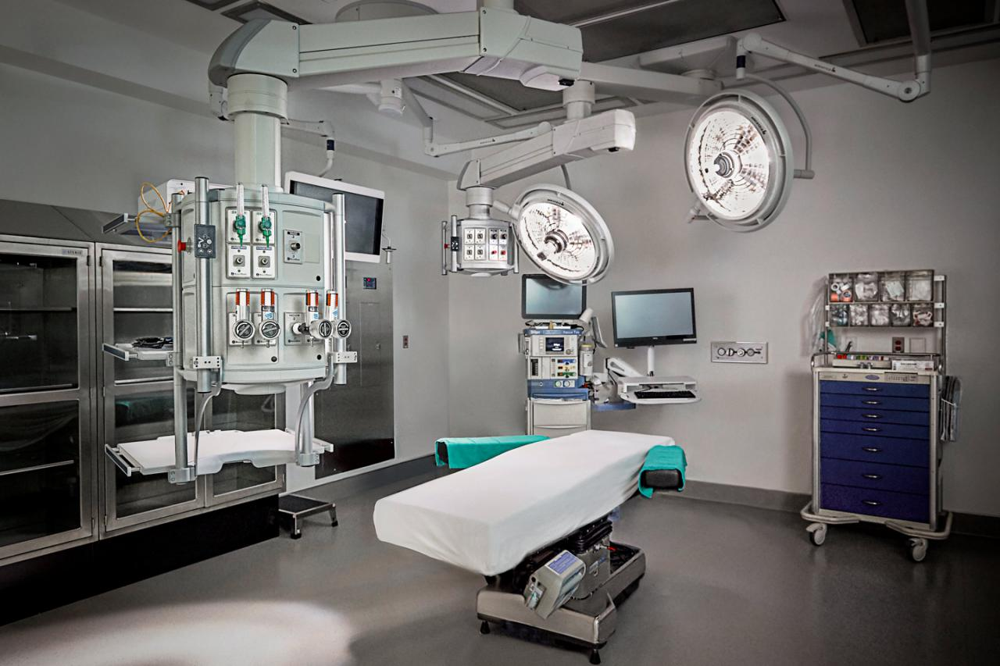

Reconstructive Science focuses on the correction of malformations due to cancer or trauma. Here on this
website, take a look at what a Reconstructive NHS worker does each day, and what sort of things you need to
be one.
Example of prosthetics being made:
This is where you might work:
